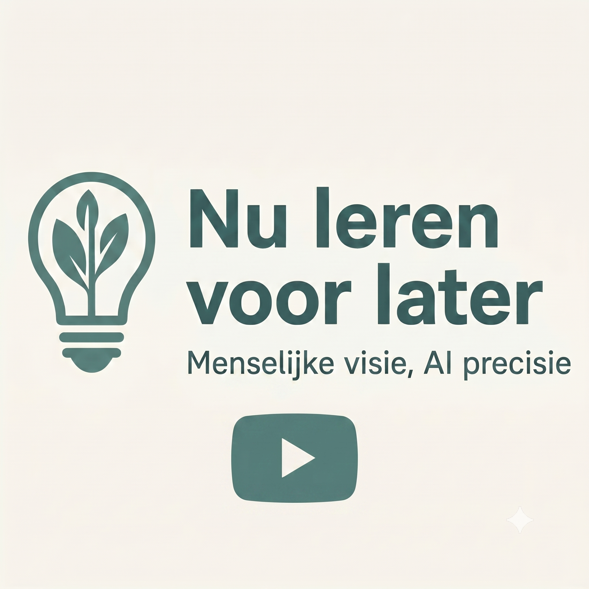

Workshop AI (in de klas)
Voor teams die praktisch willen starten met AI. Hands-on, direct toepasbaar in de les.
- Praktische tools voor je lespraktijk
- Veilig experimenteren in een vertrouwde setting
- Direct toepasbare scenario's
Ik help docenten, teams, ouders en leerlingen/studenten op weg om AI slim en veilig in te zetten — praktisch, stap voor stap, zonder jargon.
Over mij Plan een gratis gesprek
30 minuten · Online of offline · Vrijblijvend
Praktische ondersteuning op maat, zodat het écht werkt voor jou.
Voor teams die praktisch willen starten met AI. Hands-on, direct toepasbaar in de les.
Veilig en gestructureerd leren van elkaar. Jullie groei, jouw expertise, mijn begeleiding. (meer)
Voor docenten of coördinatoren die willen uitzoeken hoe AI past in hun context.
30 minuten online of offline. We bespreken jouw situatie en wat je wilt bereiken — volledig vrijblijvend.
Ik stel een voorstel samen dat past bij jouw school, team of persoonlijke leerdoelen. Geen standaard pakket.
Praktisch, stap voor stap, in jouw tempo. Met tools, workshops of coaching die direct resultaat geven.
Nog niet klaar voor begeleiding? Begin met deze gratis tools en tips.
Wat werkt nu écht in de les én in je dagelijkse werk? Korte artikelen en video's met voorbeelden die je direct kunt proberen, zónder dat het je uren voorbereiding kost.
Bekijk alle tipsIk heb alvast wat handige tools voor je gemaakt. Gratis checklists, templates of een leuke interactieve app voor in de klas én teamreflectie. Ze helpen je stap voor stap veilig op weg.
Pak ze gratis meeVideo's over AI in de klas, praktische tips en educatieve content — gratis en direct toepasbaar.

Het eerste kennismakingsgesprek is altijd gratis en vrijblijvend (30 minuten, online of offline). Daarna maken we samen een voorstel op maat, afhankelijk van de omvang en wensen.
AI-tools zijn krachtig, maar niet onfeilbaar. In mijn workshops leer je hoe je AI kritisch en veilig inzet — zodat jij altijd in controle blijft en leerlingen/studenten bewust omgaan met de uitkomsten.
Absoluut. Mijn aanpak is juist bedoeld voor mensen zonder technische achtergrond. We starten waar jij staat en bouwen stap voor stap op, in een veilige en vertrouwde omgeving.
Ja. Naast docenten en teams begeleid ik ook ouders die hun kinderen thuis willen ondersteunen met AI-vragen en digitale vaardigheden. En ik geef workshops rechtstreeks aan leerlingen/studenten in de klas — praktisch, veilig en op hun niveau. Neem gerust contact op om de mogelijkheden te bespreken.
Een losse workshop duurt doorgaans 2–3 uur. Een begeleidingstraject voor een team loopt over meerdere sessies — we stemmen dit altijd af op jullie tempo en doelen.
Laten we samen kijken wat het beste bij jouw situatie past.
Plan een gratis gesprekGeen verplichtingen, gewoon kennismaken.
Door gebruik te maken van deze website en de aangeboden tools ga je akkoord met onze algemene voorwaarden en privacyverklaring.